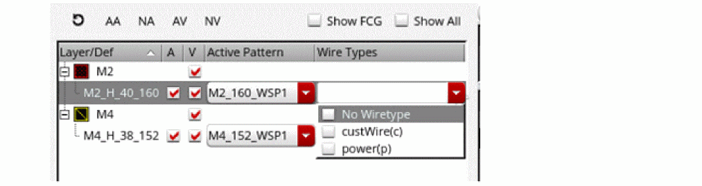

Track Pattern Table
The key components for establishing tracks using width spacing patterns are:
- widthSpacingPattern (required)
- widthSpacingPatternGroups (optional)
- widthSpacingSnapPatternDefs (required)
- relatedSnapPatterns (optional)
These are set in the technology file or for the design and are shown in the Track Pattern table with the following columns:
-
Layer/Def
Shows the defined WSSPDefs and SPDefs for each layer. SPDefs will not have entries in the Active Pattern or Wire Types columns. An SPDef is the active pattern if it is enabled. -
A (Globally Active)
Enables or disables the globally active WSP in the canvas. -
V (Visibility)
Shows or hides the active pattern in the canvas.
If one or more patterns are visible in the canvas, when you click the V (Visibility) column, all patterns are hidden. In case, no patterns are visible, when you click V (Visibility), all patterns are visible. -
Active Pattern
Selects the active WSP for each WSSPDef. -
Wire Types
Selects the active wire types for the active pattern. If no wire type is shown, then all the wire types for the active pattern are active.
If the environment variableAPR.device.grid wireTypeAbbrevis set from the Map WSP Wire Type to Symbol form in the Routing assistant, the Wire Type column displays the wire type symbols as well.

The global grid typically has one WSSPDef per layer, and each WSSPDef can have one or more allowed patterns and/or pattern groups, but only one active pattern. Entries in the table can be filtered, as described in Track Pattern Assistant Filters. Filters can be cleared, as described in Clearing Filters.
For WSSPDefs, the active WSP must be in a WSSPDef that is enabled in the Track Pattern assistant. To enable a WSSPDef, see Enabling and Disabling WSSPDefs.
In addition to WSSPdefs, you can also view row templates in the Track Pattern assistant.
The Track Pattern table displays the row template used to create the row region. The row region is displayed under the row template.
You can use the RMB menu to remove the constraint overrides for each WSSPDef. Those that do not have a cellview constraint are grayed out.
Related Topics
Launching the Track Pattern Assistant
Track Pattern Assistant Toolbar
Return to top